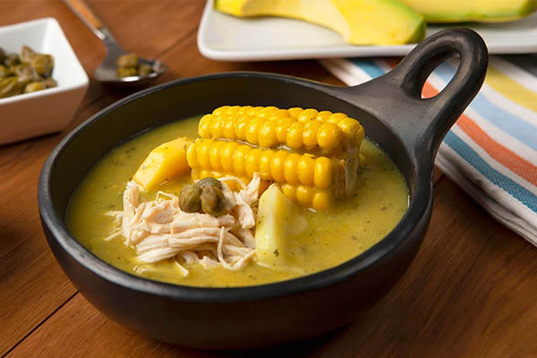
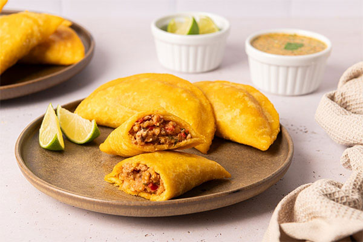
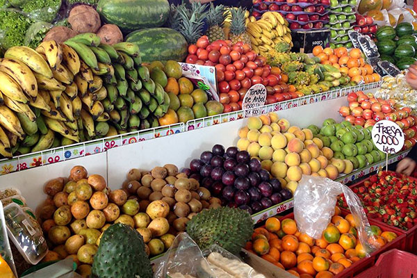

Dónde Comer
Descubrí restaurantes, cafés, mercados y espacios gastronómicos donde disfrutar los sabores tradicionales y contemporáneos de Bogotá.
Ver más
Descubrí restaurantes, cafés, mercados y espacios gastronómicos donde disfrutar los sabores tradicionales y contemporáneos de Bogotá.
Ver más
En Bogotá podés disfrutar platos tradicionales como el ajiaco, el tamal, las empanadas y el chocolate con queso, además de sabores de todo el mundo.
Ver más
Conocé mercados, plazas y espacios gastronómicos donde podés descubrir productos locales y disfrutar de la diversidad culinaria de Bogotá.
Ver más